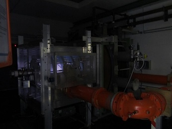

Jupyter is the reference in terms of notebooks. Its principle of narrative computing offers many advantages, but the most common application is related to education (see for instance this list of notebooks which are mainly tutorials). The ability to follow step by step a calculation, and to do it by ourself is, of course, already a big help to understand a subject. Yet, I am convinced that the notebook, and the evolution that it is presently following, can also play an active role in research and production. I want to share in a series of posts one particular application of notebooks with the concrete example of our testbed, with the hope that it can convince other people to use it or to tell their own experience in the area of research.
In this first post, I will explain why I have chosen Jupyter over more classical methods for data sharing and processing.
The need for a data platform
I run a middle-sized experiment worth of several hundreds of thousands of euros which aims at producing a helicon plasma and at analyzing its interactions with radio-frequency waves.

Despite its limited size, the experiment involves several teams distributed over several countries in Europe and plans to extend to cooperations on other continents. The idea is to have a shared experimental platform accessible for whoever wants to carry out measurements on this kind of plasma source, with a friendly plug&play interface for diagnostics and easy access to the data. In brief, this should be a XXIst century way to do “cloud experimenting” within a modest budget. In a less emphatic and more concrete tone, my need was the following: all data transit through Labview (I will explain -but not defend- this choice on another occasion; in short: time constraint). They come raw; I want to apply all calibrations, meta-data stamping and make them accessible on another more flexible and cost-effective system. In addition, I would like that the users have access to the configuration of the testbed, so that they know what kind of hardware was present when these data were acquired.
Distribute data, but in a meaningful way
My main concern was to make the data available to the distributed team. My first idea was rather classical with the development of a data server: basically, the data are stored on a computer with, for instance, a http server and each user can connect either through a web browser or through a dedicated client to this server to display the list of experiments and the associated data and download them. Since I wanted to use Python anyway (because it is, in my opinion, the best suited language for this kind swiss-knife operations of data and metadata manipulations), I was thinking of implementing a tornado server like the HDF server. It could have been thought as an extension of our present intranet but the implementation would have been difficult since this intranet runs on apache-php-drupal (it was a fast and efficient solution but not the most appropriate on the long term but this is another story) or as standalone. Another solution could have been to use something like Tango which is used on big experiments like Sardana but since we already had our own control system, it would have been overkill. So the server version seemed the most suited to our requirements.
Not the obvious choice
Yet I was not convinced by this choice for several reasons:
-
Each experiment contains several GB of data and we can have up to 100 experiments each day. Not all data are relevant but we are still at a stage where we don’t know exactly how to clean them. This means that people will tend to download a huge amount of data, just to process a small part of them; I did not have enough bandwidth to support useless data transfer; I wanted a more economic way to deal with data,
-
if a dedicated client is used, it is faster than a web browser but we would have to update it with each evolution of the database and to be sure that each client computer has the right versions for python and the different modules. In a collaboration where people come and leave often, it could become very time consuming to check that every user is equipepd with the proper tools; so I wanted a solution where I can centralize the maintenance,
-
The fact that the team is physically distributed means that everybody will work out the data his own way, with his own tools and his own models. So, in addition to sharing the data, we would have to develop and install tools to share the numerical tools, the physics models, to improve the communications. This is what is done in most collaborations, but it is probably not optimized and there is room for enhancement; I wanted here to try new solutions,
-
Finally, I am very convinced that notebooks are the future of doing data processing and computing. Its brings a huge improvement in human/computer interface, with a nice, easy way to explain what you are doing in your calculations, or how to use the data. It is particularly useful for a collaboration with temporary members (students, short term participants). They can follow your steps and understand how to process the data with a very smooth learning curve. In addition, you shorten the path between the retrieval of data, their processing and analysis and the publication. All in all, notebooks maximize your time dedicated to the creative part. I wanted to use this killer feature and see it working in real conditions.
This is why I decided to give a try to the Jupyter-based solution. It opens many interesting perspectives, even though some hurdles still need to be overcome. This will be the subject of the next post where I will detail the design choices of this solution, with a more emphasis on the code.